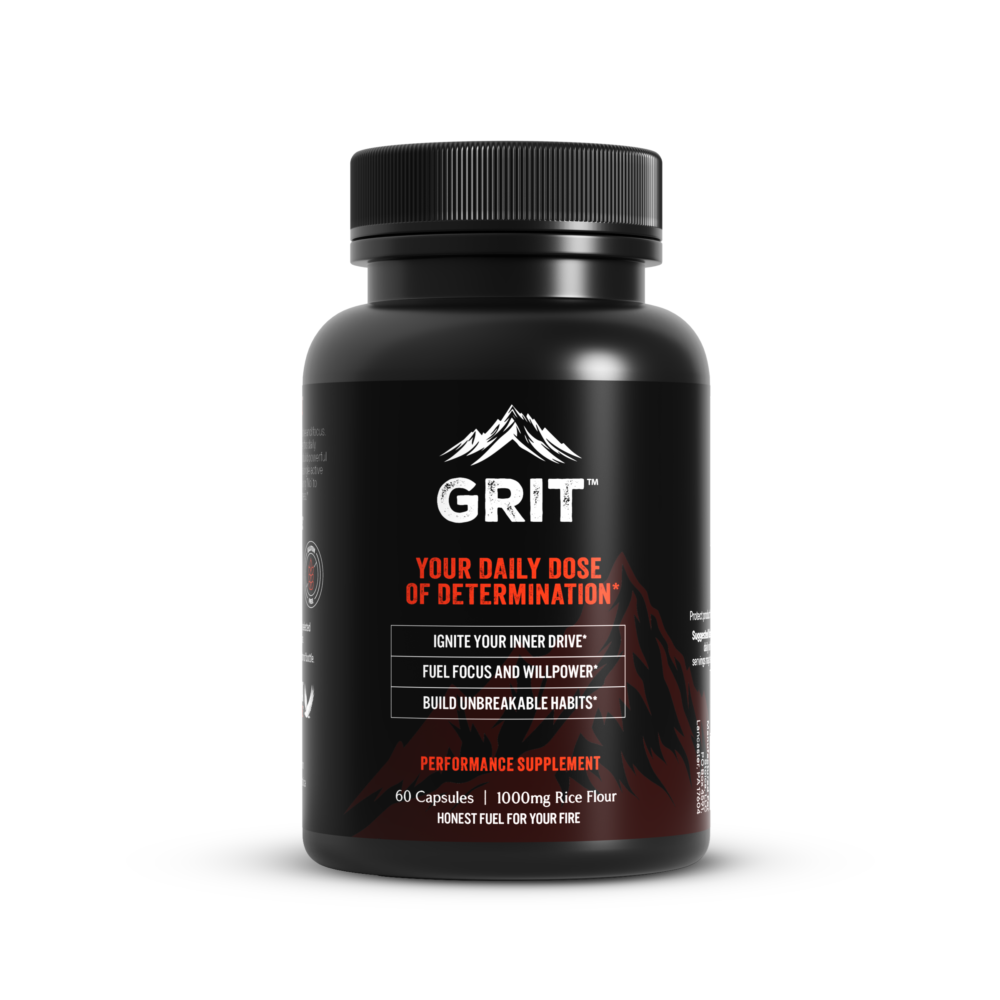
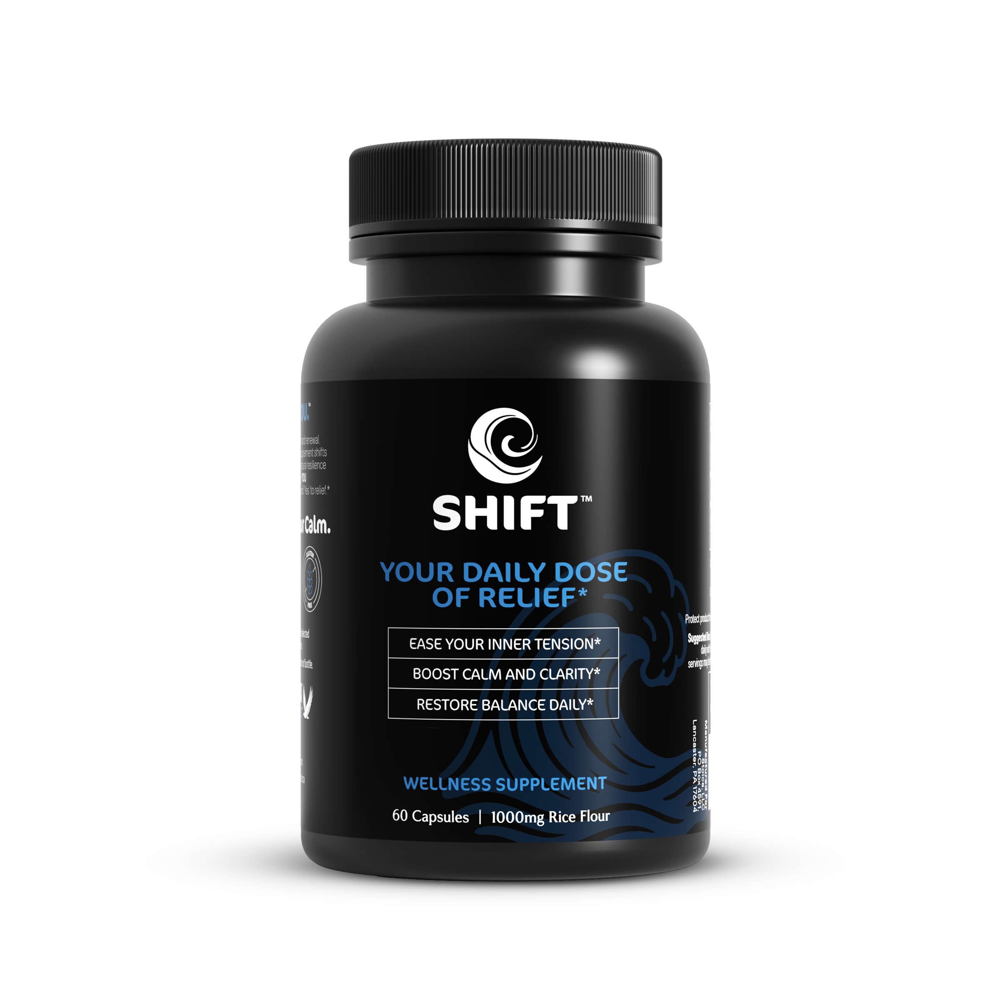

Build better habits
Powered by You.
Crafted to support focus, energy, creativity, and daily discipline through the power of ritual and belief.
What is Stoica?
Mindset supplements powered by the placebo effect — designed to help you take action, build discipline, and unlock your potential. No stimulants. No chemicals. Just the power of your own mind, activated intentionally.
Boost motivation & momentum
Use the placebo effect to prime your brain for performance.
End procrastination cycles
Anchor productivity with a simple, physical habit.
Placebo science
Rooted in neuroscience and behavioral psychology. See the research.
How Stoica works
- The ritual. Choose GRIT, SHIFT, or FLOW based on the mindset you need today.
- Activate the placebo effect. A physical ritual triggers a mental shift — activating expectation, commitment, and focus.
- Build unbreakable habits. Repeat daily to create momentum and measurable behavior change.
The collection

GRIT
Energy, drive & daily discipline
Build unbreakable habits with GRIT — a placebo-powered mindset capsule for energy, drive, discipline, and daily motivation rooted in intentional ritual.
Buy on TikTok Shop
SHIFT
Reset, clarity & calm
SHIFT helps you reset your mindset and restore clarity. A placebo-powered capsule crafted to support calm, balance, and mental alignment.
Buy on TikTok ShopFLOW
Creativity, focus & calm
FLOW is a placebo-powered mindset capsule for creativity, focus, and calm — a daily ritual designed to help you enter a flow state.
Buy on TikTok Shop60 capsules per bottle · 1000mg rice flour · Purchases are made securely on TikTok Shop.
Questions & answers
What is the placebo effect, and how does it work?
The placebo effect is a phenomenon where your belief in a treatment can create real, measurable changes in how you feel, even if the treatment itself is inactive. Stoica pairs placebo science with daily rituals so you can build habits through your own mindset. See our research page.
Are Stoica products just placebos?
Yes. GRIT, SHIFT, and FLOW are rice flour capsules designed to leverage the placebo effect. The real work comes from you: your belief, your rituals, and your mindset. We are upfront about that because it is what makes Stoica work.
What are GRIT, SHIFT, and FLOW, and who are they for?
GRIT is for ambitious go-getters who want to fuel their drive and focus on their goals. SHIFT is for people feeling stressed or overwhelmed who want to find calm. FLOW is for creative minds who want to unlock their zone and ignite deep concentration.
How do I use Stoica to get the best results?
Pair it with a daily ritual. Take 2 capsules with food at a consistent time each day — for example GRIT with your morning coffee, SHIFT in the evening to unwind, or FLOW before a creative session. Set an intention and let the ritual do the rest.
Are there any side effects?
Stoica capsules are made of rice flour, so they are unlikely to cause side effects for most people. If you have a rice allergy or any concerns, consult your doctor before starting.
Can I take GRIT, SHIFT, and FLOW together?
Yes. Many people use GRIT in the morning, SHIFT in the afternoon, and FLOW in the evening. Stick to 2 capsules per product per day and build rituals that work for you.
Who is behind Stoica?
Stoica is a small family business with a mission to help you thrive through mindset-driven rituals.
What if Stoica does not work for me?
Everyone’s experience is unique, and the placebo effect relies on your belief and rituals. If you have a problem with your order, contact support@getstoica.com. See our returns policy.